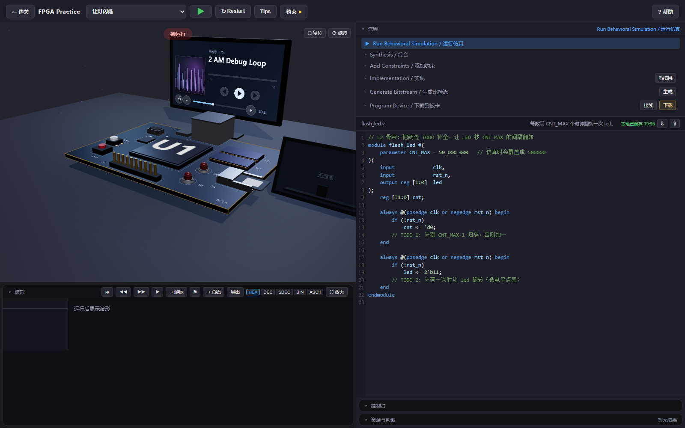
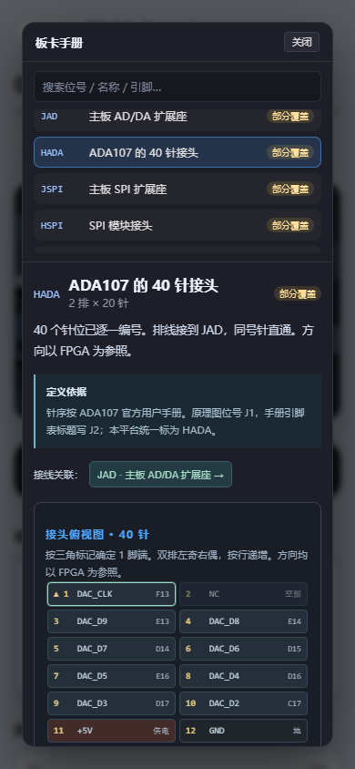

CASE 01 · 在线教学产品
让初学者在一次练习里，
把代码和电路现象对起来。
从写 Verilog、连接引脚，到运行、观察和修改，学习者可以在浏览器里走完一轮练习，再用波形和板卡手册解释眼前的结果。
31 关 / 8 章截至 2026.11 的公开课程
4.1外设实验与逐针手册
免费在线持续根据反馈迭代

一次练习怎样完成
- 01理解任务
先知道目标现象和接口要求。
- 02编写与接线
修改 Verilog，填写 XDC 或图形连线。
- 03运行与观察
查看检查结果、波形和板卡反馈。
- 04定位与重试
根据现象修改，再运行验证。


我怎样推进这个产品
确定教学方向和交互要求；检查预览；根据学员反馈选择下一项改动，并决定何时上线。
协助页面与关卡实现、测试脚本、部署操作和更新文档；实现结果经过预览与验收。
使用开源网页与数字逻辑工具构建；课程与界面在持续反馈中迭代。
三次具体的设计取舍
密集波形看不清
长时间窗口里，时钟跳变会挤成一片。波形台增加测量、跳变定位与局部精细查看，让学习者能进入具体时间段。
查看波形设计 →元件和手册要对应
板上排针、接线终点与手册采用一致编号，查元件时能继续查到每一针，减少在多个页面间来回寻找。
查看硬件与手册 →小屏幕也要能查资料
手册目录和正文分别滚动，长文本换行，调整暗色背景下的文字对比度；代码、控制台等区域也提供更大的查看空间。
查看交互改动 →从功能存在，到功能能被找到
我反复检查的不是页面里放了多少功能，而是学习者在需要时能否找到、看清并使用它。手机手册与桌面界面的阅读方式因此分别处理。
这些调整同时连接教学设计、界面设计与反馈处理。


结果与当前阶段
- 平台已公开提供从数字逻辑基础到高速数据流、ADC / DAC / SPI / GPIO / PCIe 的练习路径。
- 代码、约束、波形、三维教具和手册放在同一套练习流程中。
- 网页中的板卡用于学习与观察；实体硬件的电气、时序和板级验证有单独的工作。